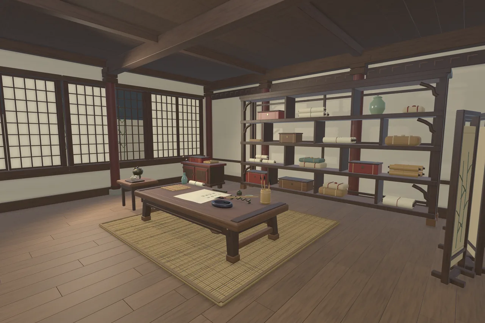
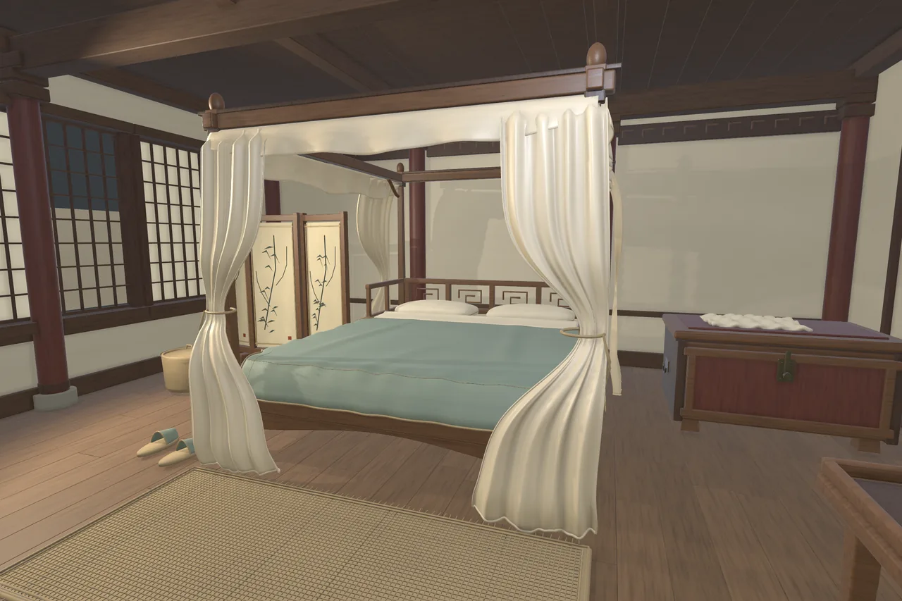
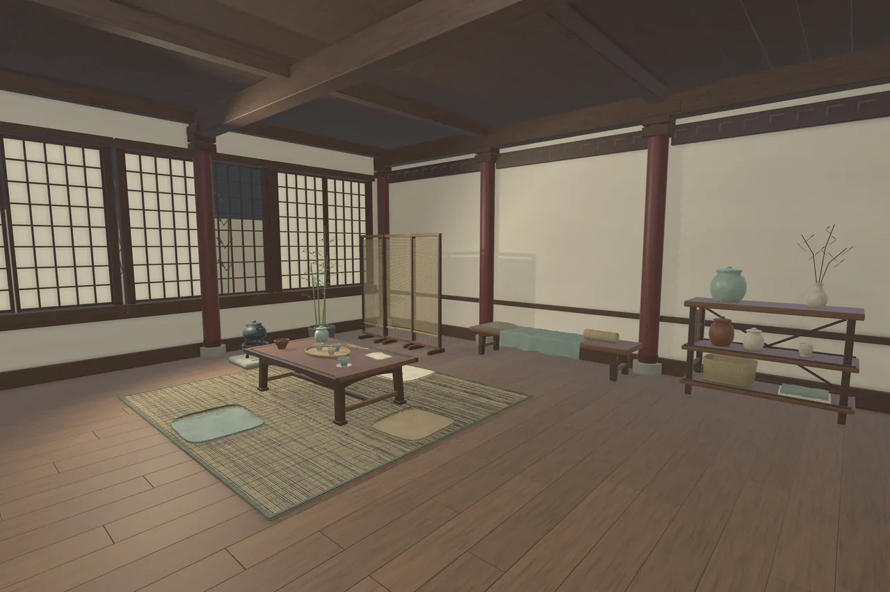

Han Courtyard Interiors
Stories in the things we keep.

Stories in the things we keep.
Four furnished rooms explore the private rhythms of a Chinese-inspired residence: study, bedroom, reception and tea room.
4 furnished rooms
58 semantic groups
10 sample scenes
Local technical candidate · Not listed on the Asset StoreGeometry budget
Triangle counts from the candidate’s Unity mesh inventory. “Tris” means triangles, not authoring polygons.
| Content / configuration | Triangles |
|---|---|
| Study · room only | 275,465 |
| Bedroom · room only | 562,150 |
| Reception · room only | 318,468 |
| Tea room · room only | 595,895 |
| Optional courtyard backdrop · per room | 28,248 |
With the optional backdrop: Study 303,713; Bedroom 590,398; Reception 346,716; Tea room 624,143 tris. These are four independent rooms with nine shared groups repeated in their FBXs; summing the four rooms does not give a unique-asset total. No LOD meshes.
A closer look
Select an image to explore




Inside the project
Rooms include ceilings, floors, walls and independent hinged doors. Furniture is organized into reusable functional groups, with optional bamboo window backdrops and a demonstration door controller.
Tested configuration
Unity 6000.6.0f1
Universal Render Pipeline 17.6.0
Windows · Direct3D 11 · Linear
Other Unity versions, render pipelines and platforms have not been verified. No target frame rate is promised.
Scope & limitations
Rooms are independent, without an automatically connected floorplan or exterior integration. Furniture is grouped, not every prop separated. High polygon counts; no LODs, cloth simulation, NavMesh or baked lighting. Window paper uses an opaque-lit approximation.